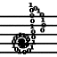

 TemperamentStudio
Things to Try
This program was written to accompany the paper, "Hearing
the Physics of Musical Scales with MIDI," by Dallin S.
Durfee and John S. Colton (citation to be added once published). Part 1 of that paper gives more information about the
physics and history of musical scales. Part 2 presents this software program and gives some details as to how it uses MIDI to play the different scales.
Background on Scales
For the full background, please see Part 1 of the paper cited above. Short
version: When we listen to a musical note the pitch that we hear is related to
the frequency of the first harmonic of the object that is oscillating to produce
the tone. When multiple notes are played together as a chord, higher harmonics
in each of the notes can interfere to produce beats, and these beats generally
cause music to sound less pleasing. Musical intervals in which the frequencies of the two notes are related by a
ratio of small integers, known as "just" intervals, have no beating, resulting
in consonant chords.
It is impossible to create a scale in which all intervals
in all keys are perfectly consonant. The various historical scales have dealt
with this issue in various ways. The Pythagorean scale defined its 12 notes based
on just fifth intervals (ratios of 3/2) going up and down from a root note. But
not all fifths have that ratio; one of the fifths results in a "wolf
interval". Mathematically, that is because 12 factors of 3/2 does not equal
27 (powers of 2 being what takes a given note from one octave to the
next). Extended five limit just intonation, an extension
of Ptolemaic just intonation, has perfectly just ratios for
all intervals which are based on the root note of the tuning scheme.
So a perfect fifth which has the lower of the two notes as
the root note of the tuning scheme will sound perfectly
consonant. Playing a fifth based on other notes, however, can result in an
interval quite far from the desired
3/2 ratio. The quarter-comma (QC) meantone scale used
extensively during the Baroque era was developed to produce just major third
intervals (ratio of 5/4), and used a fifth slightly varied ("tempered") from the
just 3/2 factor to accomplish that. It, too, has a wolf fifth, which is even
worse than the one in Pythagorean tuning.
Twelve-tone equal temperament, the scale
used
almost exclusively in western music today, divides up the scale mathematically
so that intervals sound the same in all keys. All half steps are equal to ratios
of 21/12. Other than the octave, none of the intervals (e.g. thirds and fifths) are
perfectly just, but none are as bad as they could be.
Fun Experiments
The following exercises are based on those given in Part 2 of the
paper cited above.
- Exercise 1. Exploring MIDI instruments. Play a single note, such as a middle C
(marked by the letter "q"). See how the quality of the note changes, but not the
pitch, as you select different MIDI instruments.
- Exercise 2. Create your own instrument. To hear the mathematically-predicted
beating between harmonics, an instrument that has a sustained tone with no vibrato is best. One of the best
MIDI instruments for this is the default "21: Reed Organ" (note: MIDI instrument names and
sounds vary from computer to computer). However, creating your own instrument
may work even better. Create your own instrument by clicking on the drop-down box labeled "Source" and selecting the "Sine + harmonics" option. When you do this, a set of sliders will appear allowing you to set the amplitude for the first 7 harmonics of each note. Play
a note such as middle C, then notice how the tone changes as you adjust the harmonics.
For example, by setting the sliders to approx. 0.75, 0.75, 1, 0.85, 0.5, 0.4, 0.2, a
reasonably good reed organ sound can be obtained.
- Exercise 3. Equal temperament fifths. Make sure the tuning scheme is set to
"equal_temperament".
- Play a fifth interval with the lower note being a middle C (261.6 Hz) and the upper note being the G above that.
Listen for the beating (the sound getting loud and then soft,
reminiscent of a "wah-wah"). Specifically, you should be able to hear a
beat at 0.886 Hz; see Exercise 1 of Part 1 of the paper.
- Use the left and right arrow keys to explore qualitatively how
these fifths sound as the fifth is moved up and down the keyboard, i.e.
from C-G to C♯-G♯, etc.
Verify the statement made above, that all fifths in equal temperament should be
equally far from/close to the ideal 3/2 ratio (although the beat
frequency will increase/decrease as you go up/down the scale).
-
Finally, while playing a fifth, change the tuning scheme and compare how it sounds in different schemes.
- Exercise 4. Equal temperament thirds. Make sure the tuning scheme is set to
"equal_temperament."
- Play a third interval with the lower note being an octave below
middle C and the upper note being the E above that. Listen for the
beating. Specifically, you should be able to hear a beat at 5.19 Hz; see
Exercise 2 of Part 1 of the paper.
- Use the left and right arrow keys to explore qualitatively how these major thirds sound as
the third interval is moved up and down the keyboard. Verify that all thirds are equally far
from/close to the ideal 5/4 ratio.
-
While playing a third, change the tuning scheme and compare how it sounds in different schemes.
- Exercise 5. Removing the beats. Make sure the tuning scheme is set to
"equal_temperament," and for this exercise be sure to use the hand-made reed organ sound from Exercise 2.
- The ideal fifth ratio of 3/2 means that the dominant beat
present in fifths comes from the second and third harmonics of the
higher and lower notes of the interval, respectively. Play a C-G
fifth interval as in Exercise 3, and listen to what happens to the beats as you add/remove
harmonics. Among other things, you can remove the dominant 0.886 Hz beating by
removing either the second or third harmonics.
- Similarly, the beat in major thirds
(ideally a 5/4 ratio) comes
from the fourth and fifth harmonics of the upper and lower notes, respectively. Play a C-E third interval as in Exercise 3, and listen to what happens to the
beats as you add/remove harmonics. Among other things, you can remove the dominant
5.19 Hz beating by removing either the fourth or fifth harmonics.
- Exercise 6. Pythagorean fifths. Make sure the tuning scheme is set to
"pythagorean" and the tuning root is set for "C."
- Play a C-G fifth interval as in Exercise 3, and verify that, unlike equal
temperament, no beats are present.
- Use the left and right arrow keys to explore
qualitatively how these fifths sound as fifth interval is moved up and down
the keyboard. Verify the statement made above, that one of the fifths
will be a "wolf fifth". You will recognize it by its howl! (strong beating between harmonics of
the notes)
- Exercise 7. QC meantone fifths. Repeat the previous exercise for QC meantone
("qc_meantone"). Verify the statement made above, that not only will a wolf
fifth be present for QC meantone, it will howl even worse than the Pythagorean
wolf fifth.
- Exercise 8. The other major thirds and fifths. Repeat the previous exercises
for five-limit extended fifths, and Pythagorean, QC meantone, and five-limit extended major
thirds. Notice how the degree of beating depends on where the particular interval is located within the
octave. For example, for QC meantone, all but four of the twelve possible major
thirds keys will sound great! Listen to see which four are sour. The
patterns of which fifths and which thirds will sound good and which will
sound bad is given by Figure 3 of Part 1 of the paper.
Using files, aka "What did Bach sound like to Bach?"
Press the "File Controls" button to open up the options for
playing MIDI files.
One of the best pieces to listen to is Bach's Passacaglia In C Minor (BWV 582). This is a famous Baroque organ piece.
- Listen to it in equal temperament, and then in
its intended temperament (QC meantone, root of D). To get the full effect, you can also change
the overall tuning reference to 460-470 Hz for an A instead of 440 Hz, via the Advanced controls.
(Bach didn't use the today's A440 standard!)
To many people the reduced beating in QC meantone will make the
piece sound noticeably more consonant. That's how Bach heard his own piece!
- The reduced beating is because Bach studiously avoided the wolf intervals.
Where the wolf intervals fall depends on the tuning root; for kicks, change the tuning root to
F-sharp and listen to the piece again in QC meantone. With that tuning root, wolf intervals are a-plenty!
For another experiment, select Debussy's Claire De Lune to play. This is a
famous early 20th century piano piece that employs a great deal of chromaticity
and key changes, and hence must be performed on an equal temperament instrument.
- Observe
how pleasant it sounds in equal temperament, despite the small amount of beating that is
naturally present in equal temperament.
- Then listen to how unpleasant it sounds in any other tuning scheme. Be forewarned as to how
horrible this will sound!
The Well-Tempered Clavier
Although quarter comma meantone was prevalent during Bach's life, Bach promoted the use of scales which spread dissonance across all intervals and all keys, making it possible to play music in all keys. He wrote a famous group of pieces called, "The Well-Tempered Clavier," to demonstrate this type of tuning. To get a feel for what Bach was trying to get across, do the following:
- Download MIDI files of The Well-Tempered Clavier. We have found sources where you can freely download two different MIDI versions of this music. But the fies are not in the public domain, so we have not included them with the software. But you can find them here: http://www.sdrodrian.com/bach/the_well-tempered_clavier/, and here: http://www.music.qub.ac.uk/tomita/midi.html.
- Load up a file and play it. Try listening to it using quarter comma meantone with a root of D. Then listen to it with something akin to Bach's well temperament by setting the tuning scheme to werkmeister_III with a root of C. Then try the modern equal temperament scale.
- Rinse and repeat. Try different files